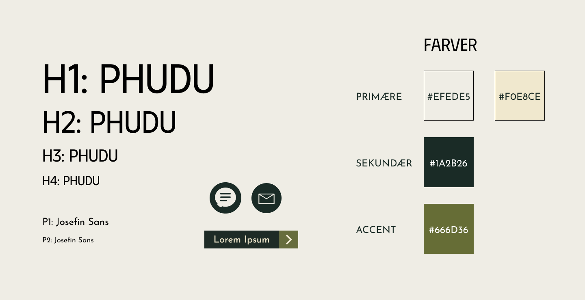

Styletile
Jeg fandt en farvepalette på Huemin, hvorefter jeg tjekkede kontrasten mellem farverne vha. Adobe's color contrast analyzer. Jeg ændrede en smule på farvernes tone og lysværdi, således at kontrasten mellem baggrundsfarverne og tekstfarverne blev høj nok. Jeg valgte to primære farver, som begge var lyse og sandfarvede. Den sekundære farve og accentfarven har begge en grøn nuance, og de komplementerer derfor hinanden.
Jeg fandt en display font til overskrifterne gennem hjemmesiden Realtime Colors. Jeg gav overskriften følgende font-størrelser; h1: 101px (5,6rem), h2: 76px (4,2 rem), h3: 42px (2,3rem) og h4: 32px (1,8rem). Paragrafferne tildelte jeg en sans-font, som jeg fandt på Google Fonts. Paragrafferne har font-størrelserne; p1: 24px (1,3rem) og p2: 18px (1rem). Der er en god kontrast mellem paragrafferne og overskrifterne, idet display fontens streger er en del tykkere end sans fontens.
